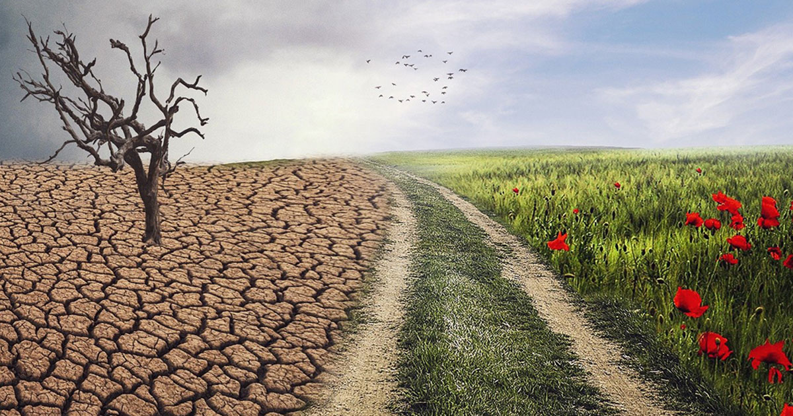
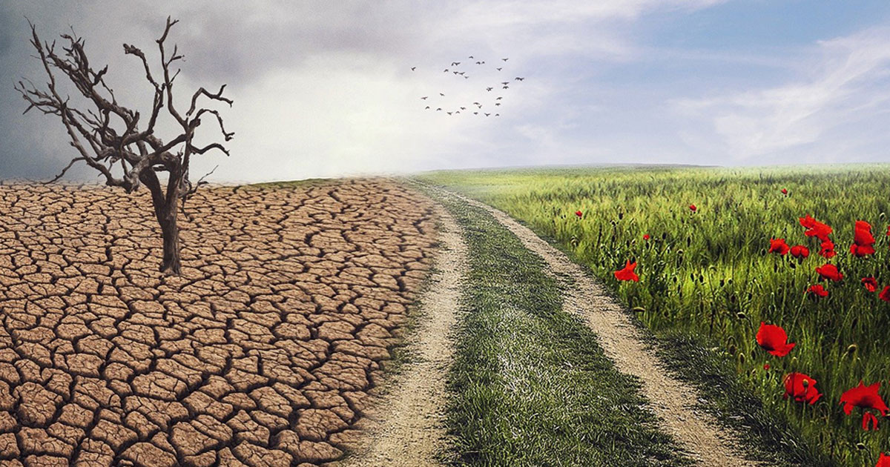
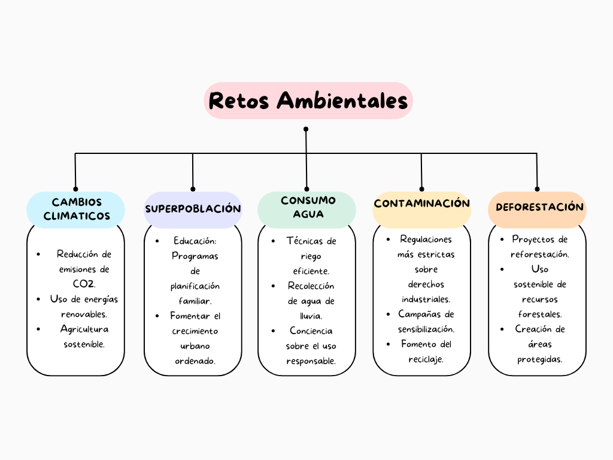

Resumen del Tema
En la actualidad, enfrentamos diversos retos ambientales y sociales que impactan nuestra vida diaria y el futuro de nuestro planeta. Estos retos incluyen el cambio climático, la deforestación, la pérdida de biodiversidad, la pobreza, la desigualdad social, la contaminación, entre otros. Las causas de estos problemas son principalmente la actividad humana, como el uso insostenible de recursos naturales y la generación de residuos. A pesar de su complejidad, hay soluciones posibles si trabajamos juntos a nivel local, nacional e internacional para abordarlos.
Principales Retos Ambientales
- Cambio Climático: Las emisiones de gases de efecto invernadero están elevando las temperaturas globales, lo que provoca fenómenos climáticos extremos.
- Contaminación: La contaminación del aire, agua y suelo afecta la salud de los seres vivos y el equilibrio de los ecosistemas.
- Pérdida de Biodiversidad: La destrucción de hábitats naturales está llevando a la extinción de especies animales y vegetales.
- Deforestación: La tala masiva de bosques reduce la capacidad de la Tierra para absorber dióxido de carbono.
 


Principales Retos Sociales
- Desigualdad Social: La brecha entre ricos y pobres sigue creciendo, afectando el acceso a servicios básicos.
- Pobreza: Millones de personas viven por debajo del umbral de pobreza, enfrentando hambre y condiciones de vida precarias.
- Desempleo: La falta de empleo digno afecta el bienestar de las personas, especialmente en las regiones más vulnerables.
- Acceso a la Educación: Muchos niños y jóvenes no tienen acceso a una educación de calidad.
Mapa Conceptual

Video sobre los Retos Ambientales y Sociales
Esquema: Afrontando los Retos Ambientales y Sociales
Afrontando los Retos Ambientales y Sociales
- Cambio Climático: Reducción de emisiones, energías renovables, reforestación.
- Contaminación: Reciclaje, políticas de control industrial, educación ambiental.
- Desigualdad Social: Mejorar acceso a educación, políticas de inclusión, cooperación internacional.
- Pobreza: Desarrollo económico sostenible, programas de ayuda social, creación de empleos dignos.